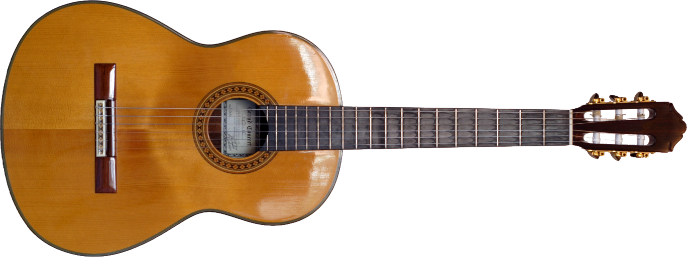
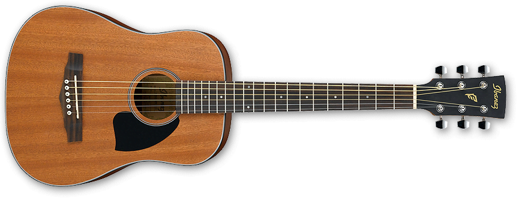

Gitar Klasik sudah tentu gitar akustik yang suaranya dihasilkan secara akustik
tapi tak semua gitar akustik bisa disebut gitar klasik.
Biar lebih jelasnya mari kita lihat gambar berikut ini
Gitar Klasik

Gitar Akustik

Nah setelah liat gambar di atas sekarang kita bisa definisikan properti apa saja
yang dimiliki gitar klasik
Gitar Klasik menggunakan senar nilon sementara gitar akustik menggunakan
senar logam jadi tak bisa ditukar senarnya antara gitar akustik dan gitar klasik.
Gitar Klasik juga memiliki nama-nama yang lain yaitu gitar spanyol, gitar nilon sedangkan
Gitar Akustik sering disebut gitar folk.
Gitar Klasik memiliki neck yang lebih lebar dibandingkan dengan gitar akustik yang
bersenar logam dan menyatu dengan body gitar pada fret 12.
Gitar Klasik tak memiliki pickguard yang sering ditemui di gitar akustik, gitar klasik
tak menggunakan pick atau clever untuk memainkannya.
Gitar Klasik tak ada cutaway pada body gitar dan
tak memiliki penanda fret di fretboard.
Disamping karakter-karakter di atas ada beberapa hal lagi yang membedakan yaitu posisi
duduk dan memegang gitar seperti gambar di bawah ini